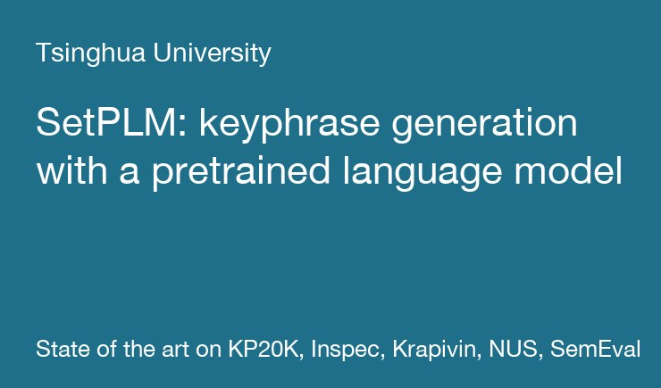
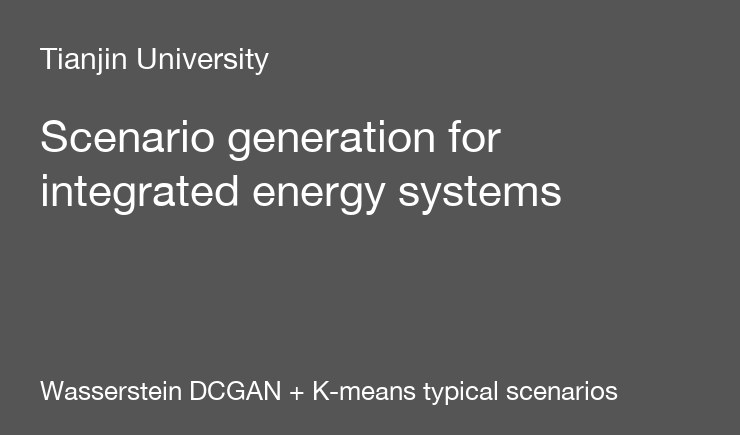

projects
Open-source code and earlier research projects.

SetPLM
Keyphrase generation with a pretrained language model: T5 inside the One2Set paradigm, keyword-code control and keyword-based padding. State of the art on KP20K, Inspec, Krapivin, NUS, and SemEval.
Tsinghua University, 2023
BerthRL
Dynamic berth and quay-crane scheduling as a bilevel problem, solved by a PPO-based algorithm that outperforms genetic algorithms, particle swarm optimization, and FIFO rules.
Georgia Tech, 2022

Scenario generation for integrated energy systems
A Wasserstein DCGAN learns the joint behaviour of wind, photovoltaic, heating, and power subsystems; K-means picks typical scenarios for planning.
Tianjin University, 2020